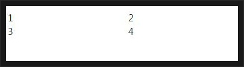
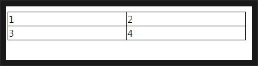
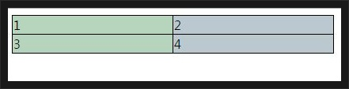

[CSS] 疑似クラス - first-child, last-child, first-of-type, last-of-type
こんにちは。明月です。
前述で疑似クラス nth-childとnth-of-typeに関して説明しました。
link - [CSS] 疑似クラス - nth-child, nth-of-type, nth-last-child, nth-last-of-type
今回は「first-child」と「first-of-type」に関して調べてみます。
簡単に「first-child」に説明すると「first-child」は「nth-child(1)」と同じ意味です。
<!DOCTYPE>
<html>
<head>
<style>
table {
border-spacing:0px;
padding:0px;
}
td {
width:200px;
}
</style>
</head>
<body>
<table>
<tbody>
<tr>
<td>1</td>
<td>2</td>
</tr>
<tr>
<td>3</td>
<td>4</td>
</tr>
</tbody>
</table>
</body>
</html>

上のテーブルで全ての枠を描こうと思いまして、「td」のタグで重ねないようにしようと考えています。
初めの行の初めの列だけの左上の枠を描いて全ての「td」の右下を描くと全ての枠が描くことに出来ます。
tr:first-child > td {
border-top:1px solid #000;
}
td:first-child {
border-left:1px solid #000;
}
td {
border-right:1px solid #000;
border-bottom:1px solid #000;
}

参考に「first-child」の代わりに「nth-child(1)」を入れても同じ結果になります。
td:first-of-type {
background-color:rgba(15, 105, 35, 0.3);
}
td:last-of-type {
background-color:rgba(92, 120, 140, 0.41);
}

- [CSS] ブラウザから開発する方法 (developer mode)2019/12/25 07:54:31
- [CSS] 色スタイル、グラデーション2019/12/24 07:37:22
- [CSS] アニメーション (animation)2019/12/20 20:51:38
- [CSS] トランスフォーム (transform)2019/12/19 13:00:26
- [CSS] トランジション(transition)2019/12/18 20:33:57
- [CSS] Columnスタイル2019/12/17 19:52:56
- [CSS] 整列スタイル (float)2019/12/17 00:08:54
- [CSS] 位置(position),表示(display)スタイル2019/12/13 20:08:50
- [CSS] border(枠)、余白スタイル - border, margin, padding2019/12/12 20:16:43
- [CSS] 文字スタイル2019/12/11 21:13:22
- [CSS] その他の疑似選択子 - link, visited, target, enabled, disabled, not, active, hover, focus2019/12/10 07:31:28
- [CSS] 疑似要素選択子 - fist-line, first-letter, before, after2019/12/09 07:28:27
- [CSS] 範囲と指定に関する選択子(全体選択子、要素選択子、孫選択子、子選択子、隣接選択子)2019/12/06 07:27:36
- [CSS] 疑似クラス - only-child, only-of-type, empty, empty, root2019/12/05 07:29:15
- [CSS] 疑似クラス - first-child, last-child, first-of-type, last-of-type2019/12/04 07:28:37
最新投稿
- [C#] Newtonsoft.JSONライブラリを利用してJsonデータ構造を扱う方法2020/04/23 20:19:53
- [C#] EMailを送信する方法(System.Net.Mail)2020/04/22 19:00:42
- [C#] ini環境ファイルを使う方法2020/04/22 00:09:39
- [C#] 環境設定ファイルを扱う方法(System.Configuration)2020/04/20 19:37:57
- [C#] Reflectionを利用してクラス複製する方法2020/04/17 00:34:33
- [C#] XMLをXPathを利用してデータを取得する方法2020/04/16 00:47:17
- [C#] NSoupライブラリを利用してXMLとHTMLをパーシングする方法2020/04/14 19:34:15
- [C#] 日付フォーマット2020/04/09 20:53:20
- [C#] ログライブラリ(log4net)を設定する方法2020/04/08 13:04:22
- [C#] Zipの圧縮ファイルを解凍するコードを作成する方法2020/04/07 11:17:44
- [C#] Zip圧縮コードを作成する方法2020/04/06 14:56:13
- [C#] 数字フォーマット(お金表示及び小数点以下表示)2020/04/03 00:38:37
- [C#] コマンド(cmd)を実行する方法(Processクラス)2020/03/31 07:15:40
- [C#] FTPに接続してファイルダウンロード、アップロードする方法2020/03/27 19:20:14
- [C#] HttpWebRequestを利用してウェブページを読み込みする方法2020/03/27 00:23:19